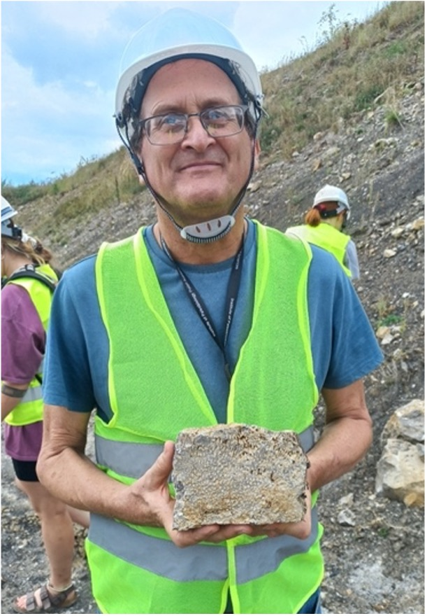
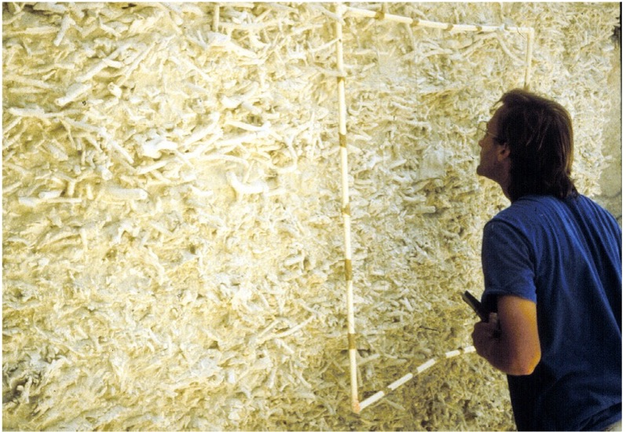
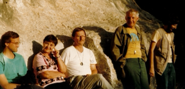

Celebrating his reef spirit - Dr. Thomas Stemann
I am tremendously saddened by the sudden and untimely passing of Tom Stemann. My recollections of Tom are during the late 1980’s and the 1990’s before his eventual faculty appointment at the University of the West Indies at Mona, Jamaica. He was a graduate student at the University of Iowa under my direction and received his PhD from Iowa in 1991. His dissertation was entitled “Evolution of the reef-coral family Agariciidae (Anthozoa: Scleractinia) in the Neogene through Recent of the Caribbean”, and it focused on the Mio-Pliocene of the Dominican Republic. Tom was a very bright student who loved fieldwork collecting fossil and living corals. As a graduate student, he was my field assistant in both the Dominican Republic and Panama. He also travelled by himself to the Dominican Republic for a month to collect agariciid fossils for his dissertation and rented a scooter to travel around. Quite an adventurous spirit! He was a quiet and creative person with a quick wit, always making us laugh, and he was open-minded and easygoing, never complaining or stressed out. I will always remember him counting his bug bites when we returned from the field each day. One day it was something like 72 bug bites. One day in the Mao Formation we had a flat tire (thorns on the road) followed by three more flat tires on the road to Puerto Plata (nails on the road). Tom and Ken Johnson quickly changed the first flat tire but had to arrange for a tire center (Centro de Gomas) to meet us and repair the three other tires. No problem – time to relax and savour a Presidente in between outcrops. Tom had a keen eye for morphology, and his dissertation tackled one of the most taxonomically challenging groups of scleractinian corals – the agariciids (six genera, 18 species). He distinguished species morphometrically by making comparisons with modern species. In fact, he was one of the first fossil coral workers to use phylogenetic analyses to examine their relationships.
After he obtained his Ph.D., Tom had a postdoctoral fellowship at the University of Bern in Switzerland under the supervision of Jörn Geister. At that time, he became interested in the Paleogene of Italy and collaborated with Francesca Bosellini on Actinacis rollei. Tom also worked with me on a large collection of Eocene corals made by Robert Stewart (geologist of the Panama Canal Commission) in the Gatuncillo Formation of Panama and described five new species. On his return to Iowa from Europe, Tom joined our group examining Plio-Pleistocene turnover in Caribbean reef coral fauna. Not knowing that Jamaica would eventually become his home, Tom toured Jamaica for the first time with us in 1994 making large Plio-Pleistocene coral collections and helping with identifications. Of course, later on, upon moving to the island, he became an expert in its geology and paleontology.
Tom really enjoyed the more carefree, slow-paced lifestyle of the Caribbean, and I’m so glad he had a faculty position at the University of the West Indies. Tom was also dedicated to the IFCRS, attending most of the meetings of the society and appreciating its international orientation. He was especially honored to serve on the IFCRS council.
Nancy Budd, Emeritus Professor University of Iowa, Nov. 2024.

Tom holding a fossil coral at the 14th IFCRS fieldwork in Poland, September 2023. Photo by J. Stolarski.

Tom quantifying fossil staghorn corals, Acropora, in the Dominican Republic (1989). Photo by K. Johnson.

Tom walking along an outcrop at Enriquillo Valley in the Dominican Republic (1989). Photo by K. Johnson.

Conference dinner at the Wieliczka Salt Mine in Krakow, Poland (2023). 14th IFCRS meeting. Left to right: T. Brachert, S. Goffredo, F. Bosellini, and T. Stemann. Photo by N. Santodomingo.

Enjoying fieldwork at an Oxfordian outcrop of Saint Mihiel, France (1991). Left to right: T. Stemann, G. Melnikova, G. Boekshoten, J. Geister, and B. Lathuilière. Photo courtesy of B. Lathuilière.

Tom after he asked the Bowden beds to be excavated, Jamaica (2008). Photo by A. O’Dea.

Fieldwork in Jamaica (2008). Left: Tom and Felix Rodriguez studying a Pliocene coast outcrop. Right: Tom getting a quick refreshment. Photos by A. O’Dea.